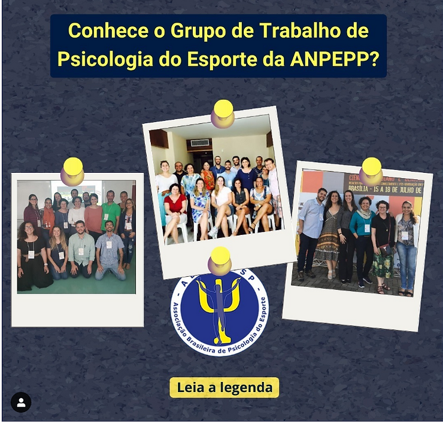

Jornal da USP 13/08/2020 – Link – “Cobrança excessiva pode levar jovens atletas à síndrome de burnout”. Trecho da matéria com a nossa presidente:
Para a psicóloga Thabata Castelo Branco Telles, presidente da Associação Brasileira de Psicologia do Esporte e pós-doutoranda da EEFERP, a cobrança por rendimento pode mesmo levar ao abandono da atividade exercida, mas adverte que “uma coisa é você ter um estresse muito grande no trabalho que é o seu sustento e o da sua família. O que é muito diferente da modalidade em que sofro pressão para ganhar porque pode ser que eu seja um atleta”. Mas a psicóloga alerta que, antes de classificar o esgotamento em atletas como burnout, é preciso analisar as relações entre o esportista e seu time. “No caso das crianças, esse é o primeiro ponto. Eu reconheço nisso um trabalho? É uma pressão enorme que acontece com algumas crianças hoje em dia, principalmente no futebol, onde competem muito cedo e, às vezes, sustentam a família antes de completar a maioridade.”
Instagram Setembro/2020 – Link – Live “Psicologia do Esporte: da que temos a que queremos” do Grupo de Estudos Olímpicos (GEO-USP), com a Profa. Dra. Kátia Rubio e a Profa. Dra. Thabata Telles. A live abordou questões relativas ao desenvolvimento da Psicologia do Esporte no Brasil e aos desafios para essa especialidade durante o período de pandemia.
YouTube 17/outubro/2020 – Link – Live no Canal do YouTube “Papo de PE”. A Profa. Dra. Luciana Ângelo (Secretaria ABRAPESP) falou sobre a história da ABRAPESP
YouTube 24/outubro/2020 – Link – Live do Canal do YouTube “Papo de PE” Profa. Dra. Gislane Ferreira (editora-chefe da RBPE) falou sobre a Revista Brasileira de Psicologia do Esporte.
Instagram – Link – O Grupo de Trabalho de Psicologia do Esporte da ANPEEP. Recentemente foi realizada nova eleição de coordenação para o próximo biênio.
